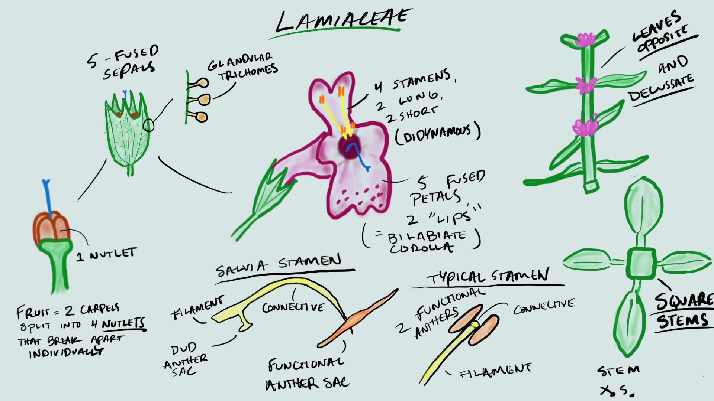
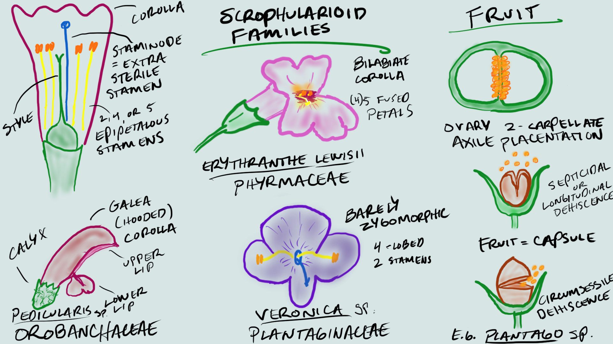
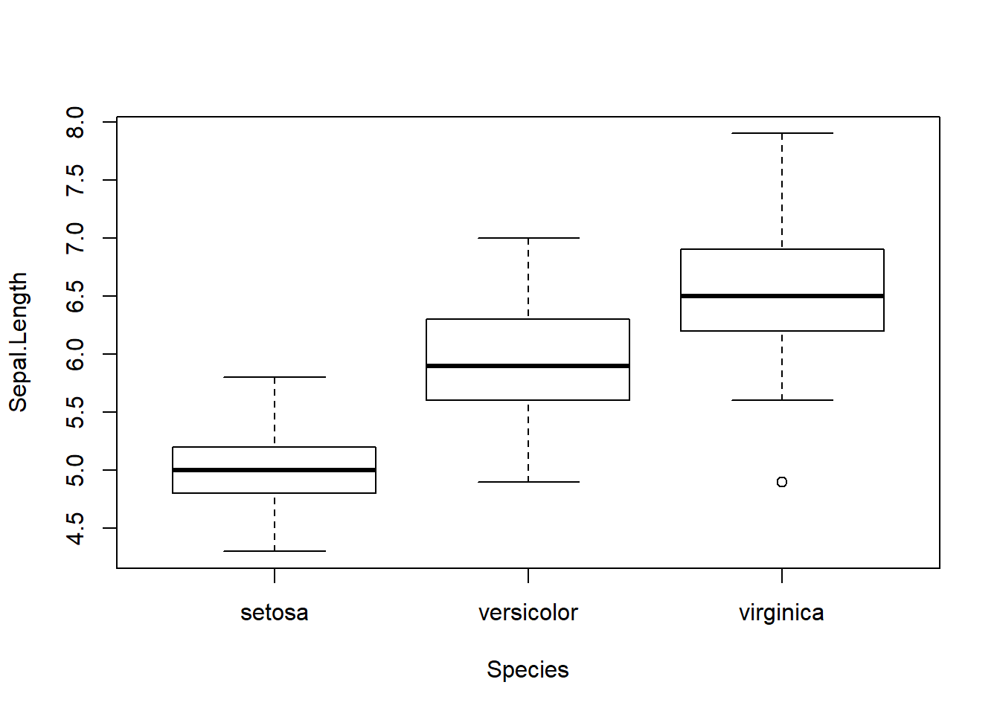
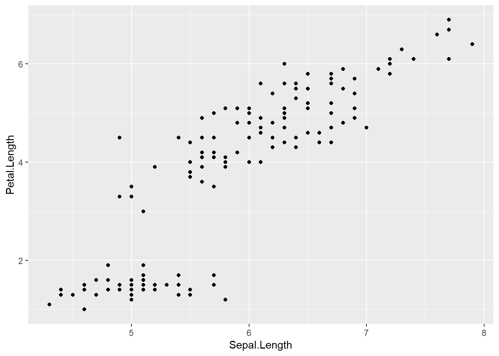
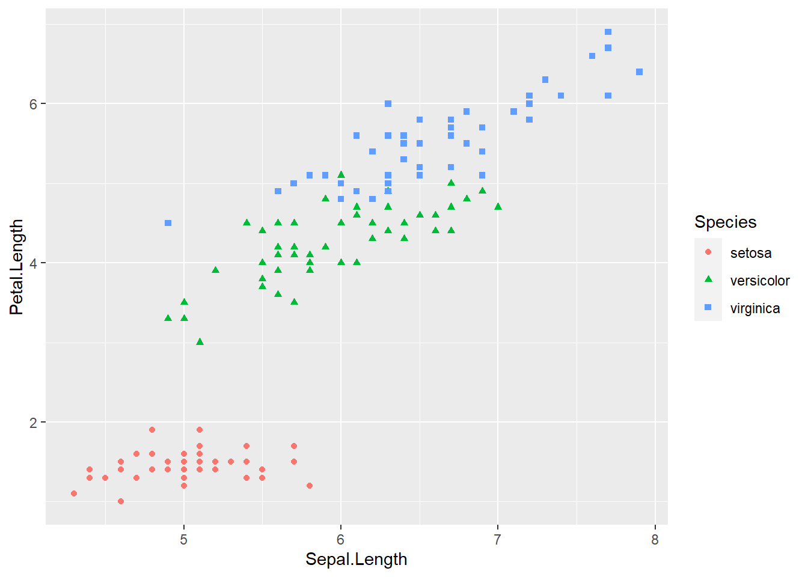
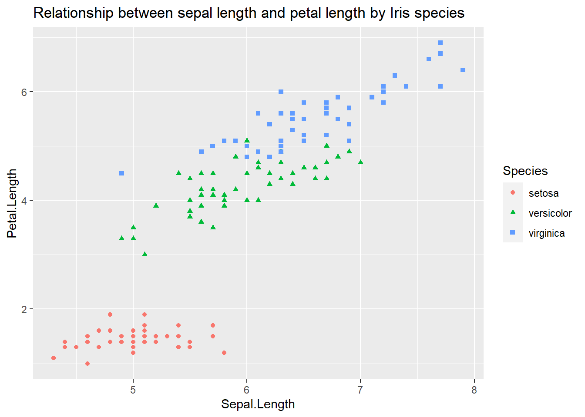

Lab 6: Lamiaceae, Schrophularioids, and R Assignment 1 - Introduction to R, RStudio, and the Global Biodiversity Information Facility (GBIF)
Mannfred Boehm and Evan Hersh
22 July, 2020
Lamiaceae (Mint family)
1. Herbs with square stems, usually aromatic.
2. Leaves simple, opposite or whorled, without stipules.
3. Flowers perfect, zygomorphic. Sepals 5, fused. Petals 5, fused, bilabiate. Stamens 2 or 4, epipetalous, often didynamous. Pistil compound, ovary superior, carpels 2, but deeply lobed, appearing as 4, placentation basal.
4. Fruit 4 nutlets.
5. About 200 genera, 3200 species, cosmopolitan
Most Lamiaceae contain fragrant oils, and many are used as herbs or flavorings, including Mentha (mint), Salvia (sage), Rosmarinus (rosemary), Thymus (thyme), Marrubium (horehound), Nepeta (catnip), Satureja (savoury), Origanum (oregano), Majorana (sweet marjoram), Ocimum (sweet basil).

Insert photos
-KNOWLEDGE CHECK- - Draw the above flowers, and label with the following structures: stamens, style, stigma, calyx, corolla, anther, dud anther, connective, nutlets.
What word describes the shape of the corollas in this family?
The calyx is synsepalous. How many lobes are there?
The corolla is sympetalous. How many lobes are there?
How many stigma lobes are there?
Scrophularioid families
1. Mostly herbs
2. Leaves simple, alternate, or opposite, without stipules.
3. Flowers perfect, zygomorphic. Sepals 5, free or fused. Petals 5, fused, often bilabiate. Stamens 2, 4, or 5, epipetalous, often didynamous, staminode often present. Pistil compound, ovary superior, carpels 2, placentation axile.
4. Fruit a capsule.
5. About 210 genera and 3000 species, cosmopolitan.
The traditionally large and heterogeneous family Scrophulariaceae sensu latissimo has recently been divided into a number of separate families on the basis of molecular phylogenetic studies. Paulownia, always of uncertain placement but often included in the Scrophulariaceae s.l., now is placed in a separate family. For further details see:
Olmsted, R. M., dePamphilis, C. W., Wolfe, A. D., Young, N. D., Elisens, W. J., & Reeves, P. A. 2001. Disintegration of the Scrophulariaceae. American J. Bot. 88: 348-361.
PLANTAGINACEAE Jussieu, nom. cons. (Snapdragon family) Ca 90 genera, 1700 species. Examples: Veronica (ca 450, inc. Hebe, Parahebe, Synthyris, etc.), Penstemon (275), Plantago (275), Litorella, Linaria (150), Bacopa (55), Antirrhinum - snapdragon, Sibthorpia, Collinsia, Digitalis, Hippuris - marestail, Callitriche - water starwort.
PHRYMACEAE Schauer, nom. cons. (Monkeyflower family) Ca 19 genera, 234 species Examples: Erythranthe (formerly Mimulus) (150-170) - monkeyflower, Mazus (30), Phryma, Rehmannia
SCROPHULARIACEAE Jussieu, nom. cons. (Figwort family) 65 genera, 1700 species. Examples: Verbascum (360) - mulleins, Eremophila (210), Scrophularia (200) - figworts, Selago (190), Buddleja (125), Jamesbrittenia (85), Manulea (75), Diascia (70), Nemesia (65)
OROBANCHACEAE Ventenat, nom. cons. (Lousewort family) 99 genera, 2061 species. Parasites or hemiparasites. Examples: Pedicularis (600-800), Castilleja (200), Euphrasia (170-350), Orobanche (150), Buchnera (100), Bartsia (50), Agalinis (45), Rhinanthus (45).
PAULOWNIACEAE Nakai 1 genus, 6 species. Example: Paulownia (foxglove tree).

Insert photos
-KNOWLEDGE CHECK- Draw the above flowers, and label with the following structures: spur, style, stigma, stamen, ovary, corolla, calyx
Draw the dissected fruit. How many carpels are there, and what type of placentation does it have?
Draw the Plantago capsule. How does the capsule dehisce?
R activity 1: Intro to R, Rstudio, Data Wrangling, and Plotting
Motivation
The use of statistics and the analysis/management of data is becoming increasingly common in many fields, and this is particularly true in the biological sciences. It may not seem obvious at first, but even taxonomists use data these days, whether it be for mapping occurrence records of their species of interest, or using morphometrics to empirically investigate the morphological differences between taxa. In the past, biologists used a combination of spreadsheets (e.g., MS Excel) and statistical software such as JMP or SPSS to conduct their statistical analyses. In recent years, many fields have transitioned to using the R programming language for their statistical needs.
R provides many advantages to traditional programs: R is open-source (free to use, all code is shared freely for users to modify how they wish), flexible, and powerful. Its open-source nature has led to the creation of thousands of custom packages, providing unprecedented access to advanced statistical analyses for anyone willing to learn. For example, you can now use R to crunch sophisticated genomic data and make highly detailed geographic maps (which you’ll be getting a taste of later!), both of which required proprietary software (e.g., CLC workbench and ArcGIS) that cost thousands of dollars to use.
R’s main disadvantage is that it has a steep learning curve. Because R is a programming language, you do most of the heavy lifting by writing code instead of clicking around like with a traditional program with a GUI (graphical user interface). This is quite scary for a lot of folks, your intrepid teaching team included! If you told Mikko, Mannfred, or I at the beginning of our R journeys that we’d be actually teaching R in the future, we would have taken a break from our frustrated crying to laugh in your face! Like with anything challenging and worthwhile in life, the only way to make progress is to push past your fear and start grinding ;-).
One more note re: fear before we jump in…this is not a programming class. Our main goal is to provide some valuable exposure to what can be done with R, and for you to learn and become more comfortable with programming if/when you end up using these tools in the future. We’ll provide the resources needed to learn the basics, and there will be plenty of lab time to work together so that we’re all tackling the learning curve together. Aside from some participation marks (and maybe a few canvas quiz questions), we will not be evaluating you based on your ability to write your own fully functioning R script. Instead, you will be assessed based on your ability to understand taxonomic concepts and interpret data. And the payoff is worth it! Knowing R can help you land summer research jobs (put it on your CV!), and is increasingly used for teaching in UBC BIOL classes (e.g. BIOL300, BIOL406, BIOL413, BIOL416).
Pre-lab
Before starting this week’s lab you will have:
completed the pre-lab reading: Introduction for Students and Chapters 1.1–1.3 from ModernDive—a textbook for learning data science using R. We will work through Chapters 1–4 of this textbook over the semester, and we encourage you to read ahead (through Ch.4) on your own time!
R and RStudio downloaded onto your computer. Chapter 1.1 in ModernDive provides instructions for downloading R and RStudio. If you have trouble with installation, contact the TAs as soon as possible for assistance,
[OPTIONAL] created an RStudio Cloud account. Although ModernDive provides an excellent introduction to R, RStudio Cloud has some useful interactive primers that make sense of the R language by getting you to write some simple code. This pre-lab activity is not required, but recommended for anyone that is completely new to R, or wants some hands-on experience with R right away.
Outcomes
By the end of this lab you will:
Know the difference between R and RStudio,
Be familiar with the layout of RStudio, and understand how to install packages and navigate the
irisdataset.Have a basic understanding of how to use functions (both in Base R and with useful packages) to manipulate and plot data.
Activity 1: An Introduction to R
MB: I’m imagining doing this live on Zoom
From reading Chapter 1.1 of ModernDive, you will know that R is a programming language, while RStudio is simply a user interface that ‘wraps around’ R. RStudio is not needed to use R, but it is convienient! While RStudio is an app that you download to locally to you computer, RStudio Cloud is web-based, meaning that you can use RStudio within your web browser, without downloading anything. If you created an RStudio Cloud account to complete the primers (see: pre-lab activities) then you can use your account to use RStudio online (not required for this class).
During this activity, we’ll be exploring the ‘iris’ dataset in R. Along the way, we’ll learn some basic R skills, like loading packages, creating objects, filtering data, and making some basic plots. ALl of these skills will come in handy as we move towards using R to solve taxonomic problems.
Open RStudio, and follow the instructions on this webpage. First, open a new R script file (File - New File - R script), save it into your working directory, and write all of the code from this exercise in your new script file. This will allow you to keep a record of your code, re-run your code later, and share code with others. Type (or copy) the following code into your script file, and run it (highlight and hit command / control + enter, or click the “Run” button at the top of the script pane).
Installing and loading packages and data
library(datasets) #this loads the 'datasets' package, which contains a bunch of datasets to explore
iris #typing the name of the dataset will display the contents of the data in the console pane
class(iris) #this will display the 'class' of the object 'iris'
summary(iris) #this will give various summary statistics on the dataframe 'iris'The code class(iris) showed us that ‘iris’ is a data frame, and summary(iris) showed us that there are five columns in the data frame: Sepal.Length, Sepal.Width, Petal.Length, Petal.Width, and Species. Note that there are periods instead of spaces in the column names…R has trouble reading spaces, so it’s good practice to use periods or underscores when naming things in R.
Now, let’s install a couple useful packages:
You only need to install packages once. Then, you need to load the packages you want to use:
Data Wrangling
‘dplyr’ is very useful for data “wrangling” (filtering, summarizing, re-organizing, etc), and ‘ggplot2’ is a very popular tool for making beautiful and customizeable plots. Let’s see a bit of what ‘dplyr’ can do for us…
iris.virginica <- filter(iris, Species == "virginica") # takes only the rows for which 'Species' is 'virginica' and puts them in a new data frame called 'iris.virginica'
head(iris.virginica) # head() shows the first 6 lines of the data frame## Sepal.Length Sepal.Width Petal.Length Petal.Width Species
## 1 6.3 3.3 6.0 2.5 virginica
## 2 5.8 2.7 5.1 1.9 virginica
## 3 7.1 3.0 5.9 2.1 virginica
## 4 6.3 2.9 5.6 1.8 virginica
## 5 6.5 3.0 5.8 2.2 virginica
## 6 7.6 3.0 6.6 2.1 virginicaNotice that we use the logical double equal sign as in species == "virginica", and quotations around virginica since this value is of a char (character) data type. The equivalent ‘base R’ command (built into R and not requiring additional packages) for filter() would be subset(), with all the inner arguments being exactly the same. This highlights how you can use multiple approaches to do things in R (and when programming in general)…
We can also filter using multiple conditions:
iris.virginica.sepal6 <- filter(iris, Species == "virginica", Sepal.Length > 6) #keeps virginica species that have sepals longer than 6
head(iris.virginica.sepal6)## Sepal.Length Sepal.Width Petal.Length Petal.Width Species
## 1 6.3 3.3 6.0 2.5 virginica
## 2 7.1 3.0 5.9 2.1 virginica
## 3 6.3 2.9 5.6 1.8 virginica
## 4 6.5 3.0 5.8 2.2 virginica
## 5 7.6 3.0 6.6 2.1 virginica
## 6 7.3 2.9 6.3 1.8 virginica
We can use ‘dplyr’ to select only certain columns from a data frame:
iris.selected <- select(iris, Sepal.Length, Sepal.Width, Petal.Length) #list the columns you want to select
iris.selected2 <- select(iris, Sepal.Length:Petal.Length) # select all columns from sepal.length to petal.length using colon symbol
head(iris.selected)## Sepal.Length Sepal.Width Petal.Length
## 1 5.1 3.5 1.4
## 2 4.9 3.0 1.4
## 3 4.7 3.2 1.3
## 4 4.6 3.1 1.5
## 5 5.0 3.6 1.4
## 6 5.4 3.9 1.7## Sepal.Length Sepal.Width Petal.Length
## 1 5.1 3.5 1.4
## 2 4.9 3.0 1.4
## 3 4.7 3.2 1.3
## 4 4.6 3.1 1.5
## 5 5.0 3.6 1.4
## 6 5.4 3.9 1.7(See how iris.selected and iris.selected2 have the same contents…)
Above we used the ‘:’ symbol to select a series of values. You can use the same concept to select columns/rows in a dataframe:
What do these different bits of code do? Why does each one give different results?
-KNOWLEDGE CHECK- Write a bit of code that takes the first 3 columns and the first 5 rows of the ‘iris’ data frame, and store it in a new object (name it something silly).
We’ll look at one last ‘dplyr’ function, summarise(), which is extremely useful for data exploration.
iris.sums <- summarise(iris, mean.Sep.length = mean(Sepal.Length), mean.Pet.length = mean(Petal.Length)) #calculate mean of Sepal.Length and Petal.Length, name the columns for our new means, and store in the object 'iris.sums'
iris.sums ## mean.Sep.length mean.Pet.length
## 1 5.843333 3.758This took the average of every value in the Sepal.Length and Petal.Length column, but what if we want the average of these values for each species instead of averaging across all of them? With ‘dplyr’, we can use a slightly more advanced technique called ‘pipes’ %>%:
iris.sums.species <- iris %>%
group_by(Species) %>%
summarise(mean.Sep.length = mean(Sepal.Length), mean.Pet.length = mean(Petal.Length))
iris.sums.species## # A tibble: 3 x 3
## Species mean.Sep.length mean.Pet.length
## <fct> <dbl> <dbl>
## 1 setosa 5.01 1.46
## 2 versicolor 5.94 4.26
## 3 virginica 6.59 5.55In the above code, we used ‘pipes’ %>% to connect our three lines of code kind of like a flow chart. In the first line iris.sums.species <- iris %>%, we say we’re going to be using the ‘iris’ data frame and storing our results in the object ‘iris.sums.species’, and the %>% at the end ‘pipes’ us into our next line. group_by(Species) %>% says we will be grouping the following results based on species (you could specify other groupings here as well). Finally, the last line uses the same summarise() function as above to calculate the means. Pretty cool, eh? This is just scratching the surface of what ‘dplyr’ can do to help you wrangle your data and start to make sense of it…
Plotting data
Now, let’s mess around with some of the plotting functions in R to help us visualize the ‘iris’ dataset. Let’s start with the base R function plot:

As you can see, this very simple function made a pretty complicated scatterplot displaying the relationship between every variable in the dataset. If we want to look at the relationship between two specific variables, we go like this:

Still using the plot() function, we specify what variables will be on the X and Y axes using x= and y=. We also specified the variables we want to use in the ‘iris’ dataset using the $ symbol.
How would you interpret this plot? Does it look like there is a relationship between sepal length and petal length in Iris species?
-KNOWLEDGE CHECK- modify the above code to plot the relationship between sepal width and petal width. To spruce it up a little bit, try adding col=iris$Species to your code…
We can also use the base R function hist() to make a simple histogram:

From this plot, we can see that the majority of sepals are between 4.5-7 in length…
Remember box and whisker plots from your statistics classes? It just takes a single line of code to make a boxplot of sepal length for each species:

-KNOWLEDGE CHECK- Given the relationship between sepal length and petal length, what might we guess about the petal length of I. virginica? Modify the above code to make box plots of petal length instead, and see if you were right…
Earlier in this exercise, we had you install the ‘ggplot2’ package. Many people find that ggplot2 is more intuitive and customizeable than base R for making plots. Let’s recreate the scatterplot of sepal length and petal length that we made above, but with ggplot instead:

In the first line above, we set the data frame and ‘aesthetics’ (what variables are on what axis) in the ggplot() function. Running that code alone won’t produce a plot, because we haven’t specified the ‘geom’ (type of plot) we want to display. We add a + to the end of the first line, and specify geom_point() on the next line. Using this basic framework, we can add in more code bits and really start sprucing up our ggplot:
ggplot(data=iris, aes(x = Sepal.Length, y = Petal.Length))+
geom_point(aes(color=Species, shape=Species)) 
Isn’t that amazing??? With just two lines of code, we’ve created a beautiful plot, complete with data points labeled by shape and colour, and it adds a legend automatically! Let’s fiddle around a bit more:
iris.ggplot1 <- ggplot(data=iris, aes(x = Sepal.Length, y = Petal.Length))+
geom_point(aes(color=Species, shape=Species))+
ggtitle("Relationship between sepal length and petal length by Iris species")
iris.ggplot1
Just like a data frame, you can store a ggplot in an object iris.ggplot1 <- ggplot(...). We also added the element ggtitle() to our ggplot by adding a + to the end of the previous line. You can keep adding more and more stuff to your ggplot, just make sure you put a + at the end of each line.
-KNOWLEDGE CHECK- Make your own ggplot from the ‘iris’ dataset. Make sure to plot different variables than the example above, give it a new title, and add axis labels using xlab() and ylab() (don’t forget to add a ‘+’ before adding a new line to your ggplot).
How would you interpet the plot you made? Think about what the data tell you about the relationship between different floral characters, and how they differ between Iris species.
To submit within 48 hours of lab time (Lab participation marks)
All -KNOWLEDGE CHECKS-
1. Labelled drawings of Lamiaceae
2. Labelled drawings of Scrophularioids
3. R script with code from today’s lab
- Clearly label -KNOWLEDGE CHECK- sections with comments in your code.
Homework
- Complete your Canvas quiz
- Review GBIF
- Lab 7 pre-lab readings
CANVAS QUIZ QUESTIONS
- What are the different windows (console, script, environment, plot) and what do they do?
- what is an object?
- what is a function?
- Get them to interpret a few plots of the ‘iris’ dataset
- Label Lamiacious and Scrophulariacious flowers